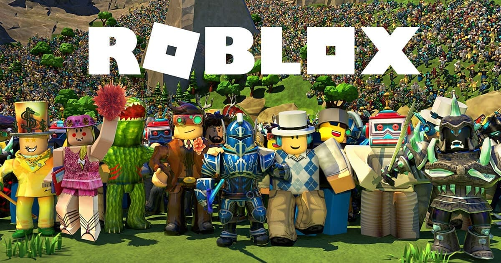
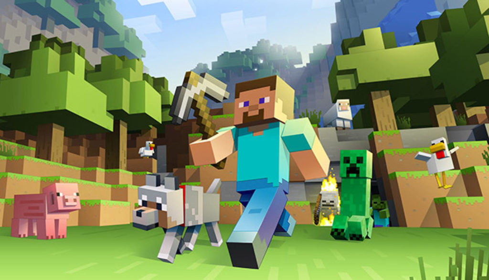

Brawl Stars
 click here to download Brawl Stars
click here to download Brawl Stars
Brawl Stars is a mobile multiplayer game where you team up with friends or other players to battle in a variety of fast-paced game modes. You can choose from a variety of Brawlers, each with their own unique abilities and weapons. Here are some of the key features of Brawl Stars: Multiplayer mayhem: Team up with friends or other players to battle in a variety of game modes. Fast-paced action: Most matches last less than three minutes, so you can jump in and out of the action quickly. Variety of Brawlers: Choose from a variety of Brawlers, each with their own unique abilities and weapons. Unlock and upgrade: Unlock and upgrade your Brawlers to make them more powerful. Collect skins: Collect unique skins to customize your Brawlers and show off your style. Brawl Stars is a fun and exciting game that is perfect for players who are looking for a fast-paced and competitive multiplayer experience.
Roblox
 Roblox sign inRoblox is a popular online game platform where you can play games created by other players. It's a great way to meet new friends and have fun together. Here's a quick summary of what you can do on Roblox: Play games: There are millions of games to choose from, covering all sorts of genres, from role-playing games to obstacle courses. Create games: If you're feeling creative, you can use Roblox Studio to build your own games and share them with the community. Chat with friends: You can chat with your friends in-game and make new ones. Customize your avatar: You can customize your avatar's appearance with different clothes, accessories, and emotes. Roblox is a great way to spend time with friends and have fun. It's also a great way to learn new skills and express your creativity.
Minecraft
 Download MinecraftMinecraft is a popular sandbox game where players explore a procedurally generated world made of blocks. Players can mine resources, craft tools and weapons, and build structures. The game features a day and night cycle, with monsters appearing at night. Players can choose to play in survival mode, where they must gather resources and fight off monsters, or in creative mode, where they have unlimited resources and can fly.